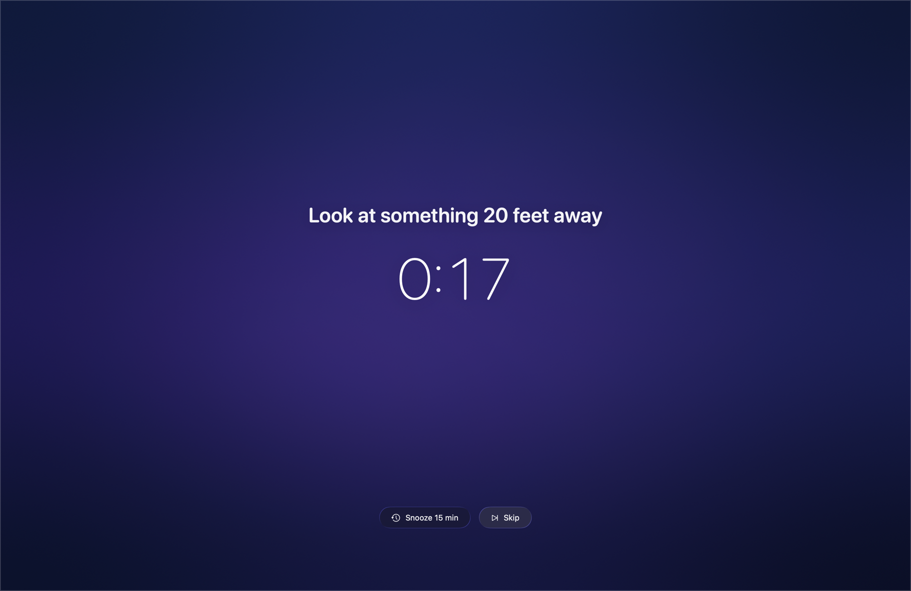

Halftone
Free, native break reminders for macOS. 0% CPU. Never interrupts a meeting.
macOS 26+ · Apple silicon · MIT
Smart Pause
Halftone watches the microphone, camera, screen sharing, video playback and fullscreen apps. When any of them is active, the break holds until you are done. No configuration, no calendar, no rule to remember.
Three surfaces, in order
Breaks should never be a jump scare. Halftone builds up to them.

What's inside
One armed timer, no polling, no Electron. macOS draws the countdown, so Halftone sleeps between breaks.
Shell hooks on every event, Shortcuts actions, and a URL scheme. Pause your music when a break starts, or log every break to a file.
~/.config/halftone/hooks/break-start #!/bin/zsh osascript -e 'tell app "Music" to pause' Or from Raycast, Alfred, a keyboard: open "halftone://pause?minutes=30"
Twenty seconds every twenty minutes, a longer break each hour. Every number is yours to change.
Minutes to the next break. The icon changes to say why a break is holding.
Gentle: skip anytime. Delayed: controls appear after a pause. Hold: press for two seconds to skip.
Three-second reminders on their own schedule. They wait out calls and breaks.
Step away and the time counts as your break. Lock the screen or close the lid and it does the right thing.
Set a working window. Outside it, Halftone goes quiet and shows a sleeping icon.
Install
Download the disk image, drag Halftone to Applications, open it once. It is signed by the developer, not the App Store, so macOS asks you to confirm the first launch: right-click the app, choose Open, then Open again.
macOS 26 or later · Apple silicon · MIT license